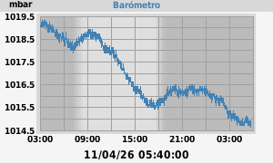
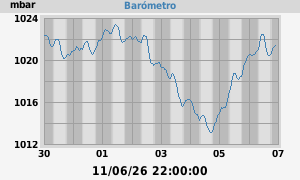
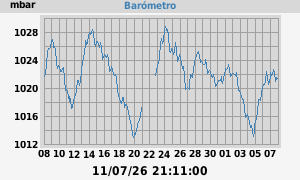

mín: 994.7 mbar a las 00:00:41
máx: 1007.2 mbar a las 22:01:12

mín: 994.4 mbar a las 23:23:21 (Wednesday)
máx: 1015.8 mbar a las 00:13:39 (Monday)

mín: 994.4 mbar a las 11/11/26 23:23:21
máx: 1023.7 mbar a las 11/01/26 10:31:56